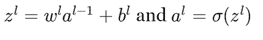

到目前为止，我们已经介绍了一些监督、半监督、非监督和强化学习技术和算法。在这一章中，我们将涵盖神经网络及其与深度学习实践的关系。传统的学习方法是编写告诉计算机做什么的程序，但神经网络是利用形成主要输入来源的观察数据来学习和寻找解决方案。这项技术的成功取决于神经网络的训练方式(即观察数据的质量)。深度学习指的是学习前面提到的神经网络的方法。
技术的进步将这些技术带到了新的高度，这些技术展示了卓越的性能，并用于解决计算机视觉、语音识别和 自然语言处理 ( NLP )中的一些重要需求。像脸书和谷歌这样的大公司已经在很大程度上采用了深度学习实践。
本章的主要目的是从概念上加强对神经网络和相关深度学习技术的掌握。借助于一个复杂的模式识别问题，本章涵盖了开发一个典型的神经网络的程序，你将能够用它来解决一个类似的复杂问题。以下图示显示了本书涵盖的所有学习方法，突出了本章学习的主要主题— 深度学习。
本章深入讨论了以下主题:
- 快速回顾机器学习的目的、学习的类型以及深度学习的背景，并详细介绍它解决的特定问题。
- 神经网络概述:
- 人脑是神经网络的主要灵感来源
- 神经网络架构的类型和神经元的一些基本模型
- 一个简单的学习示例(数字识别)
- 感知器概述、第一代神经网络以及它们能够做什么和不能做什么
- 线性和逻辑输出神经元概述。介绍反向传播算法，并应用反向传播算法的衍生物来解决一些现实世界的问题
- 认知科学的概念、softmax输出函数和处理多输出场景
- 卷积网络的应用与物体或数字识别问题
- 递归神经网络(【RNN】)和梯度下降法
- 作为部件分析和自动编码器原理的信号处理:自动编码器的类型有深编码器和浅编码器
- 使用Apache Mahout、R、Julia、Python (scikit-learn)和Apache Spark的实践练习
让我们首先回顾机器学习的前提，并强化学习方法的目的和背景。正如我们所知，机器学习是通过使用观察数据建立模型来训练机器，而不是直接编写特定的指令来定义数据模型，以解决特定的分类或预测问题。车型这个词在这个语境里无非就是一个系统。
程序或系统是使用数据构建的，因此看起来与手写的非常不同。如果数据发生变化，程序也会根据新数据进行下一级的训练。因此，它需要的是大规模处理的能力，而不是让一个熟练的程序员为所有可能仍然被证明是严重错误的情况编写代码。
我们有一个机器学习系统的例子，叫做垃圾邮件检测器。该系统的主要目的是识别哪些邮件是垃圾邮件，哪些不是。在这种情况下，垃圾邮件检测器没有被编码为处理每种类型的邮件；相反，它从数据中学习。因此，这些模型的精确度总是依赖于观测数据的好坏。换句话说，从原始数据中提取的特征通常应该覆盖数据的所有状态，以使模型准确。构建特征提取器是为了从分类器或预测器使用的给定数据样本中提取标准特征。
更多的例子包括识别模式，如语音识别、对象识别、人脸检测等等。
深度学习是一种机器学习，它试图从给定的数据中学习突出的特征，从而试图减少为每一类数据(例如，图像、语音等)构建特征提取器的任务。).对于人脸检测需求，深度学习算法会记录或学习鼻子的长度、两眼之间的距离、眼球的颜色等特征。该数据用于解决分类或预测问题，并且显然与传统的 浅层学习算法非常不同。
众所周知，人脑是人体中最难以置信的器官之一。大脑本质上是让我们人类变得聪明的东西。它负责根据我们对触觉、嗅觉、视觉、视觉和听觉的体验来建立我们的感知。这些经历被收集并储存为记忆和情感。从本质上来说，大脑使我们变得聪明，没有它，我们可能只是这个世界上的原始生物。
新生婴儿的大脑能够解决任何复杂而强大的机器都无法解决的问题。事实上，就在出生后的几天内，婴儿就开始认识他/她的父母的面孔和声音，并开始表现出当他们不在身边时渴望见到他们的表情。经过一段时间后，他们开始将声音与物体联系起来，甚至可以认出一个有视觉的物体。现在，他们是怎么做到的呢？如果他们遇到一只狗，他们如何认出它是一只狗；还有，他们会把狗吠声和它联系起来并模仿同样的声音吗？
很简单。每当婴儿遇到一只狗，他/她的父母就把它说成是一只狗，这加强了孩子的模型。如果他们认为孩子是错的，孩子的模型会包含这些信息。所以，狗有长耳朵，长鼻子，四条腿，一条长尾巴，可以是不同的颜色，如黑色，白色或棕色，发出吠叫声。这些特征是通过婴儿大脑记录的视觉和听觉来识别的。由此收集的观测数据推动了今后对任何新天体的认识。
现在，假设婴儿第一次看到一只狼；他/她会通过观察狼的特征的相似性来识别狼是狗。现在，如果父母在第一次看到狼时输入明确的差异，例如，它发出的声音的差异，那么这就成为一种新的体验，并存储在存储器中，用于下一次看到。随着越来越多这样的例子的同化，孩子的模型变得越来越准确；这个过程是很潜意识的。
几年来，我们一直致力于建造像人类一样具有智能的机器。我们正在谈论的机器人可以像人类一样行动，并且可以以与人类相似的效率完成特定的工作，例如开车、打扫房间等等。现在，把机器建成机器人需要什么？我们可能需要建立一些超级复杂的计算系统来解决我们的大脑可以立即解决的问题。致力于构建人工智能系统的这个领域被称为深度学习。
以下是深度学习的一些正式定义:
根据维基百科，深度学习是一套机器学习的算法，试图通过使用由多个非线性变换组成的模型架构来对数据中的高级抽象进行建模。
根据http://deeplearning.net/的说法，深度学习是机器学习研究的新领域，其目的是让机器学习更接近其最初的目标之一——人工智能。
这个主题已经发展了好几年；下表列出了多年来的研究领域:
|
研究领域 |
年 |
|---|---|
|
神经网络 |
1960 |
|
多层感知器 |
1985 |
|
受限玻尔兹曼机 |
1986 |
|
支持向量机 |
1995 |
|
深度学习和RBM的新兴趣 最先进的MNIST |
2005 |
|
深度递归神经网络 |
2009 |
|
卷积DBN |
2010 |
|
最大池CDBN |
2011 |
在许多其他人当中，这一领域的一些主要贡献者是杰弗里·辛顿、扬·勒村、洪拉克·李、安德鲁·y·Ng和约舒阿·本吉奥。
以下概念模型涵盖了深度学习的不同领域以及本章涵盖的主题范围:
让我们来看看手头的一个简单问题；要求是从这里给出的手写笔迹中识别数字:
对于人脑来说，这非常简单，因为我们可以识别数字287635。我们大脑解读数字的简单性被认为破坏了这个过程的复杂性。由于视觉皮层的存在，我们的大脑被训练成逐步拦截不同的视觉，每个皮层包含超过1.4亿个神经元，它们之间有数十亿个连接。简而言之，我们的大脑不亚于一台已经进化了几百万年的超级计算机，众所周知它能很好地适应视觉世界。
如果计算机程序必须破解数字的识别，那么识别和区分一个数字和另一个数字的规则应该是什么？
神经网络就是这样一个研究了几年的领域，众所周知它解决了多层学习的需要。总体思路是馈入大量手写数字；下图显示了此数据(训练)的一个示例，可以从这些示例中学习。这意味着规则是从提供的训练数据中自动推断出来的。因此，训练数据集越大，预测就越准确。如果我们遇到一个问题，要区分数字1和数字7，或者数字6和数字0，我们需要学习一些细微的区别。对于零点，起点和终点之间的距离很小或者为零。
区别基本上是因为这些学习方法的目标是模仿人脑。让我们看看是什么让这个问题变得难以解决。
总之，深度学习是机器学习的一个子集，我们知道这涉及到输入示例的技术和一个模型，该模型可以评估模式，以便在它出错的情况下进行进化。因此，在一段时间内，这个模型将尽可能精确地解决问题。
如果这需要用数学来表示，让我们定义我们的模型为一个函数 f(x，θ) 。
这里， x 是作为值的向量提供的输入，而 θ 是模型用来预测或分类 x 的参考向量。因此，为了提高准确性，我们需要接触最大数量的示例。
我们来举个例子；如果我们基于两个因素来预测一个去餐馆的游客是否会回来——一个是账单的金额(x1T14】，另一个是他/她的年龄(x2T18)。当我们收集特定持续时间的数据并分析它的输出值时，输出值可以是1(如果访问者回来了)或-1(如果访问者没有回来)。绘制时，数据可以采用任何形式，从线性关系到任何其他复杂形式，如下所示:
类似线性关系的东西看起来很简单，而更复杂的关系会使模型的动态变得复杂。参数 θ 到底能不能有一个最优值？我们可能需要应用优化技术，在接下来的章节中，我们将讨论这些技术，比如感知器和梯度下降法等等。如果我们想开发一个程序来做到这一点，我们需要知道我们的大脑是如何识别这些数字的，即使我们知道，这些程序在本质上可能非常复杂。
神经计算一直是这项研究的主要兴趣，旨在了解并行计算如何在神经元中工作(灵活连接的概念)，并像人脑一样解决实际问题。现在让我们来看看人类大脑的核心基本单元，神经元:
人类大脑是关于神经元和连接的。神经元是大脑中最小的部分，如果我们取一小米粒大小的大脑，已知它至少包含10000个神经元。每个神经元平均有大约6000个与其他神经元的连接。如果我们观察神经元的一般结构，它看起来如下。
我们人类经历的每一种感觉，无论是思想还是情感，都是因为我们大脑中数百万个被称为神经元的细胞。由于这些神经元通过传递信息相互交流，人类感觉、行动并形成感知。这里的图表描述了生物神经结构及其组成部分:
每个神经元都有一个中央胞体；正如任何细胞一样，一般来说，它有一个轴突和一个树突树，分别负责与其他神经元发送和接收信息。轴突连接到树突树的地方称为突触。突触本身有一个有趣的结构。它们包含引发传递的传递分子，传递性质可以是阳性或阴性。
神经元的输入被聚集，当它们超过阈值时，电尖峰被传输到下一个神经元。
下面的图描绘了突触的模型，描述了信息从轴突到树突的流动。突触的工作不仅仅是传递信息，事实上，它使自己适应信号的流动，并具有从过去的活动中学习的能力。
作为机器学习的领域中的一个类比，传入连接的强度是根据它被使用的频率来确定的，因此它对神经元输出的影响被确定。人类潜意识里就是这样学习新概念的。
此外，诸如药物或身体化学物质等外部因素也可能影响这一学习过程。
现在，我们将借助以下列表，总结大脑内部的学习过程:
在将神经元模型系统化为人工神经网络 ( 安)之前，让我们先看看不同类型、类别或方面的神经元，并在中具体说明人工神经元或感知器，即生物神经元的深度学习等价物。众所周知，这种方法在我们在前一节列出的一些用例中产生了非常有效的结果。ann又叫前馈神经网络，多层感知器 ( MLP )，最近又叫，深度网络或学习。一个重要的特征是需要特征工程，而深度学习代表了需要最少特征工程的应用，其中学习通过多层神经元进行。
显然人工神经元从生物神经元中汲取灵感，如前所述。人工神经元的特征如下:
- 有一组从其他神经元接收到的输入在上下文中激活该神经元
- 有一个输出递质传递信号或激活其他神经元
- 最后，核心处理单元负责从输入激活产生输出激活
神经元的理想化是一个应用于建立模型的过程。简而言之，就是一个简化的过程。一旦简化，就有可能应用数学和相关的类比。在这种情况下，我们可以很容易地增加复杂性，并使模型在确定的条件下稳健。需要采取必要的谨慎措施，确保在简化过程中不会删除任何有重大影响的方面。
线性神经元是神经元的最简单形式；它们可以表示如下:
输出 y 是输入xIT23】与其权重wIT27】的乘积之和。这在数学上表示如下:
这里， b 是偏置。
前面等式的图形表示如下:
二进制阈值神经元是由麦卡洛克和皮茨在1943年引入的。这类神经元首先计算输入的加权和，类似于线性神经元。如果该值超过定义的阈值，则发出固定大小的活动峰值。这个尖峰被称为命题的真值。另外很重要的一点是输出。任何给定时间点的输出都是二进制的(0或1)。
展示这种行为的等式如下所示:
和
y = 1 如果 z ≥ θ ，
y = 0 否则
这里 θ = -b(偏置)
(或)
和
y = 1 如果 z ≥ 0 ，
y = 0 否则
此外，这里给出了前一个方程的图示:
乙状结肠神经元在人工神经网络中被高度采用。已知这些神经元提供平滑的实值输出，因此是所有输入的有界函数。与我们迄今为止看到的神经元类型不同，这些神经元使用逻辑函数。
众所周知，逻辑函数具有易于计算的导数，这使得学习变得容易。该导数值用于计算权重。以下是乙状结肠神经元输出的等式:

随机二进制神经元使用与逻辑单元相同的等式，其中一个重要的区别是输出是针对概率值测量的，该概率值测量在短时间窗口内产生尖峰的概率。因此，等式看起来像这样:

此外，该方程的图形表示为:
总的来说，我们可以观察到的是，每个神经元接受一组输入的加权和，在这些输入上应用了非线性激活函数。校正线性函数通常用于解决回归问题，对于分类问题，应用逻辑函数。这种情况的一般表示如下:
现在，这些输入可以被输入到一系列的神经元层中。让我们看看接下来会发生什么，以及这是如何发生的。输入层推送输入值；隐藏的神经元层将这些值作为输入。在这些隐藏层中可以有多个层，其中一层的输出作为输入提供给下一层。每一层都可以负责专门的学习。此外，最后，隐藏层中的最后一个输入到最终输出层。人工神经网络的典型结构如下图所示。下一张图中的每个圆圈代表一个神经元。信用分配路径 ( CAP ) 的概念是指从输入到输出的路径。在前馈网络中，路径的长度是隐藏层和输出层的总数。下图显示了具有单个隐藏层和层间连接的前馈神经网络:
- For the single layer network:
神经元总数= 4 + 2 = 6(不计算输入)
总重量= [3 x 4] + [4 x 2] = 20
对于26个可学习参数，总偏差= 4 + 2 = 6。
- For the two layer network:
神经元总数= 4 + 4 + 1 = 9(不计算输入)
总重量= [3 x 4] + [4 x 4] + [4 x 1] = 12 + 16 + 4 = 32
41个可学习参数的总偏差= 4 + 4 + 1 = 9
那么，神经网络的最佳规模是多少呢？确定隐藏层的可能数量以及每层的大小非常重要。这些决定决定了网络的容量。更高的值有助于支持更高的容量。
让我们举一个例子，我们将通过获得以下分类器来尝试三种不同大小的隐藏层:
显然，有了更多的神经元，可以表达更高复杂性的函数，这很好，但我们需要注意过度拟合的情况。因此，较小规模的网络适用于较简单的数据。随着数据复杂性的增加，需要更大的数据量。权衡总是在处理模型的复杂性和。过度拟合。深度学习解决了这个问题，因为它将复杂的模型应用于极其复杂的问题，并通过采取额外的措施来处理过度拟合。
在这一节中，我们将介绍一些关键类型的神经网络。下面的概念图列出了几种主要的神经网络类型:
乔丹网络是部分递归网络。这些网络是电流前馈网络，不同之处在于在输入层内具有额外的上下文神经元。这些上下文神经元是自我强加的，并使用来自输入神经元的直接反馈来创建。在Jordon网络中，上下文神经元的数量总是等于输入神经元的数量。下图描述了输入层中的差异:
Elman网络，正如Jordon网络一样，是部分递归前馈网络。这些网络也有上下文神经元，但在这种情况下，主要区别是上下文神经元从输出神经元而不是从隐藏层接收反馈。情境神经元和输入神经元的数量没有直接的相关性；相反，上下文神经元的数量与隐藏神经元的数量相同。反过来，这使得这个模型更加灵活，就像隐藏神经元的数量根据具体情况而定一样:
径向偏置函数网络也是前馈神经网络。这些网络有一个特殊的隐藏层，称为径向对称神经元。这些神经元用于使用高斯度量转换输入向量和中心之间的距离值。这个附加层的优点在于，它提供了确定所需层数的附加能力，而无需人工干预。线性函数的选择决定了最佳输出层。因此，即使与反向传播相比，在这些网络中学习发生得相对更快。
这种方法唯一的缺点是它处理大输入向量的能力。下图描绘了径向对称神经元的隐藏层。
霍普菲尔德网络围绕着一个叫做网络能量的概念工作。这仅仅是网络的一个最优局部极小值，它定义了功能的一个平衡状态。Hopfield网络以达到这种平衡状态为目标。平衡状态是指一层的输出等于前一层的输出。下图描述了如何在Hopfield网络中检查和管理输入和输出状态:
继续讨论训练网络的主题，梯度下降算法帮助神经网络学习权重和偏差。此外，为了计算成本函数的梯度，我们使用一种称为反向传播的算法。反向传播在20世纪70年代首次被讨论，直到20世纪80年代才变得更加突出。已经证明，当采用反向传播算法时，神经网络学习要快得多。
在本章的前几节中，我们看到了基于矩阵的算法是如何工作的；类似的符号用于反向传播算法。对于给定的权重 w 和偏差 b ，成本函数c有两个偏导数，分别是 ∂C/∂w 和 ∂C/∂b 。
这里陈述了关于反向传播的成本函数的一些关键假设。让我们假设成本函数由下面的等式定义:
其中， n =训练样本数
x =单个训练集的总和
y = y(x) 为预期输出
L =神经网络的总层数
aL=aL(x)为输出激活向量
假设1:总成本函数可以是单个成本函数的平均值。对于 x 单个训练集，成本函数现在可以表述如下:
此外，单个训练集的成本函数可以如下:
在这种假设下，由于我们可以计算每个训练集的偏导数 x 为∂ x C/∂w和∂ x C/∂b，所以整体偏导数函数∂C/∂w和∂C/∂b可以是每个训练集的偏导数的平均值。
假设2:该假设是关于成本函数 C 的，即 C 可以是神经网络输出的函数，如下所示:
扩展之前的成本函数的等式，现在可以将每个训练样本集 x 的二次成本函数写成如下。我们可以看到这也是如何作为输出激活的函数的。
反向传播是关于权重和偏差对总成本函数值的影响。
首先，我们计算第lthT50】层中jthT46】神经元的误差δljT56】，然后用这个值计算与这个误差δlT60】jT62】相关的偏导数:
第 l th 层中第j神经元的误差函数δlj可以定义为:

因此，也可以计算层LT79】δLT82】的误差。这反过来有助于计算成本函数的梯度。
等式1:给定位置 j 的神经元，层 L 、δLT5】的计算误差。
等式2:给定下一层 δ L+1 的误差，计算上一层 L ， δ L 的误差。
等式3:该等式衡量对成本的影响，并给出偏差的变化:
此外，我们将从等式1和2得到以下内容:
这是因为误差值与偏导数的变化率相同。
在这些算法的每一个阶段，都有某种影响网络整体输出的学习。
编译后的最终反向传播算法解释如下:
- 输入层 x ，对于 x =1 设置激活为a1T29】。
- 对于其他层的每一层 L = 2，3，4 …L ，计算激活次数为:
- 使用等式1和等式2计算误差δLT38】。
- 使用等式3反向传播 l = L-1，L-2，… 2 ，1的误差。
- 最后，使用等式4计算成本函数的梯度。
如果我们观察算法，误差向量δlT44】从输出层开始向后计算。事实上，成本是网络输出的函数。要了解早期权重对成本的影响，需要应用一个链规则，该规则在所有层中反向工作。